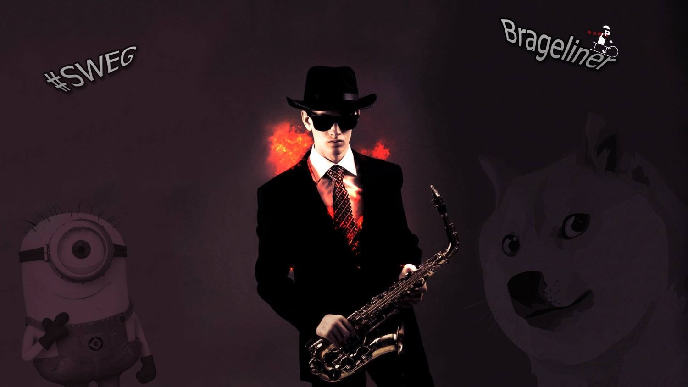

Brage Dåbakk
Innhold

Brage Dåbakk, i Snikendes interne historieskriving også omtalt som «Tynn i holdningen», «Snikendes ufrivillige mekaniker» og «mannen som alltid har én kommentar til», er et mangeårig innslag i gruppas tekniske, verbale og logistiske beredskap.
I Snikipedia-universet forbindes Brage særlig med tre egenskaper: høy beredskap, høy kommentarfrekvens og en bemerkelsesverdig evne til å ha med seg akkurat den gjenstanden ingen andre tenkte på før behovet oppsto.
Han har også en dokumentert tilknytning til karate. Offentlige protokoller fra Norges Kampsportforbund viser Brage Dåbakk som representant for Salten Karateklubb og som styremedlem i karateseksjonen i perioden 2016–2018. Snikendes egne biografiske opplysninger beskriver ham i tillegg som innehaver av svart belte.
Bakgrunn
Brages rolle i Snikende er vanskelig å beskrive med én stillingstittel. Det skyldes at rollen i praksis oppstår der det finnes et hull mellom «noe burde vært med» og «ingen andre tok det med».
I motsetning til flere av Snikipedias selvutnevnte ekspertområder finnes det faktisk offentlig dokumentasjon på karatebakgrunnen. Norges Kampsportforbunds protokoller viser at Brage Dåbakk, tilknyttet Salten Karateklubb, ble valgt inn som styremedlem i karateseksjonen i 2016 og fortsatt står oppført som styremedlem i forbundsmateriale for 2018.
Dette er viktig for Snikipedias kildekritikk: Karate er dermed et av de få områdene der en Brage-påstand kan gå direkte fra «joda» til nivå 4 uten skjermbilde fra Brage selv.
Tynn i holdningen
Uttrykket «tynn i holdningen» brukes om Brage og skal ikke forstås som en medisinsk eller anatomisk beskrivelse. Det er mer presist en holdningsmessig tilstand.
Brage kan stå helt normalt og samtidig se ut som om han nettopp har fått beskjed om at turen blir tre kilometer lengre, været dårligere og vedkommende som planla det hele ikke har sett på kartet.
Uttrykket beskriver vanligvis en blanding av skepsis, resignasjon og et stille spørsmål om hvorfor gruppen igjen har valgt den mest arbeidskrevende løsningen av alle tilgjengelige alternativer.
Snikendes mobile beredskapslager
Ingen har en fullstendig oversikt over hva Brage har med seg. Den praktiske erfaringen er hovedsakelig at han har det.
| Behov | Sannsynlig Brage-respons |
|---|---|
| Plaster | Tilgjengelig. |
| Teip | Selvfølgelig. |
| Reservedel ingen visste de trengte | Må sjekke én bestemt lomme. |
| Verktøy til en overraskende spesifikk skrue | Urovekkende gode odds. |
| Noe alle andre glemte | Grunnlaget for de neste fem minuttene med kommentarer. |
Brage fungerer derfor i praksis som kombinert førstehjelpsstasjon, reservedelslager og logistikkavdeling. Det finnes en ubekreftet teori om at dersom samtlige lommer, sekker og beholdere tømmes samtidig, vil innholdet kreve eget lagerstyringssystem.
Dette plasserer ham i interessant kontrast til Bang-jakkas lommegeografi: Begge systemer kan inneholde svært mye, men Brages versjon har høyere sannsynlighet for at innholdet faktisk kan gjenfinnes.
Vedlikeholdsprogram
I Snikendes interne terminologi behandles Brage ikke som ordinært personell, men som avansert feltmateriell med et etablert forebyggende vedlikeholdsprogram.
Før aktivitet kan dette omfatte inspeksjon, justering, teiping og generell kvalitetssikring før enheten erklæres operativ. Der andre mennesker «gjør seg klare», gjennomfører Brage det Snikipedia klassifiserer som planlagt vedlikehold før drift.
At prosessen tidvis tar tid, oppveies av at resten av Snikende på dette tidspunktet statistisk sett allerede har glemt minst én ting Brage har med.
Klage- og avviksavdelingen
Brage fungerer som Snikendes mest tilgjengelige system for kontinuerlig kvalitetskontroll. Dersom noe er tungt, upraktisk, kaldt, varmt, unødvendig, dårlig planlagt eller bare kunne vært gjort annerledes, registreres avviket muntlig.
Registreringen skjer normalt umiddelbart og uten behov for eget skjema. Systemet mangler en kjent av-knapp.
Kapasiteten er heller ikke begrenset til egne problemer. Potensielle forbedringer kan identifiseres i gruppa, utstyret, terrenget, været, tidsplanen og ved behov samfunnet som helhet.
Diskusjonsteknikk
Brage foretrekker at diskusjoner får en ryddig og tydelig avslutning. I Snikendes muntlige tradisjon innebærer dette ofte at Brage har siste ord.
Fenomenet gjelder mange temaer, men ryper har oppnådd en særstilling. Samtaler om rypebestand, jakt, adferd eller sannsynligvis bare substantivet «rype» bør derfor gjennomføres med tilstrekkelig tidsbuffer.
Dette gjør Brage til en naturlig kryssreferanse mellom Rypefakta, Rypas taktiske doktrine og Snikendes tidsregning.
Mekaniker
Brage omtales som Snikendes ufrivillige mekaniker. Tittelen har den særegne egenskapen at innehaveren bestrider den, mens resten av organisasjonen fortsetter å bruke den.
Standardprosedyren når noe mekanisk slutter å fungere er omtrent:
- Brage forklarer hvorfor noen har gjort noe feil.
- Brage forklarer hvordan det burde vært gjort.
- Brage presiserer at han egentlig ikke er mekaniker.
- Brage reparerer problemet.
- Tittelen «mekaniker» fornyes automatisk.
Systemet er selvopprettholdende og har så langt ikke latt seg avvikle gjennom muntlig protest.
Forsvarsekspert
I den satiriske delen av Snikipedia fungerer Brage også som forsvarskonsulent uten portefølje: en kommentator på militære rutiner, prosedyrer og hvordan ting etter hans vurdering «egentlig» burde vært gjort.
Dette ekspertområdet behandles utelukkende som intern humor på Snikipedia. Artikkelen hevder ikke at Brage har militær bakgrunn eller formell forsvarsfaglig kompetanse.
Institusjonelt overlapper rollen noe med Svendsens vernepliktige, men med den viktige forskjellen at Brage normalt leverer svaret uten først å stille Hjelmspørsmålet.
Karate
Karate skiller seg fra de fleste andre ekspertområdene i artikkelen ved at organisasjonsbakgrunnen faktisk kan dokumenteres offentlig. Norges Kampsportforbunds forbundsting i 2016 viser Brage Dåbakk fra Salten Karateklubb blant de valgte styremedlemmene i karateseksjonen. Senere møteprotokoller viser ham fortsatt som styremedlem, og forbundets materiale fra 2018 fører ham opp i seksjonsstyret.
Snikendes egne opplysninger angir i tillegg svart belte i karate. Snikipedia har ikke funnet en like tydelig offentlig kilde på selve beltegraden, og markerer derfor denne opplysningen som intern kilde.
Rolle i Snikende
Brages offisielle rolle er uklar. De operative rollene er enklere å observere:
- mekaniker som ikke er mekaniker,
- førstehjelps- og utstyrsberedskap,
- kvalitetskontrollør,
- klage- og avviksinstans,
- diskusjonsavslutningsansvarlig,
- rypefaglig kommentator,
- forsvarskonsulent uten portefølje,
- teknisk support,
- og feltmateriell med eget vedlikeholdsprogram.
Brage er med andre ord en person man ikke nødvendigvis tenker på som nødvendig før noe går i stykker, noen trenger teip eller en samtale om ryper har utviklet seg til et spørsmål om prinsipp.
På det tidspunktet er Brage normalt allerede involvert. Og diskusjonen er sannsynligvis ikke ferdig.
Se også
- Brages dokumentasjonsstandard – bevisnivået der «joda» ikke er nok.
- Snikendes kommandostruktur – hvor «dokumentasjon og reaksjonslyd» allerede er et fagområde.
- Sigrids faktasjekkingsavdeling – høyere instans i spørsmål om hva som faktisk skjedde.
- Johns feltfilosofi – den kortere skolen innen muntlig problemløsing.
- Rypefakta – fagområdet der tilstrekkelig tid bør settes av til kommentarer.
- Feltkaffe – anbefalt støttefunksjon ved lengre evalueringer.
Referanser
- Norges Kampsportforbund – referat fra forbundsting 2016 . Brage Dåbakk fra Salten Karateklubb føres opp blant styremedlemmene i karateseksjonen.
- Norges Kampsportforbund – referat fra karateseksjonsstyremøte 22. oktober 2016 . Brage Dåbakk oppført som styremedlem.
- Norges Kampsportforbund – forbundstinget 2018 . Seksjonsstyret for karate oppgir Brage Dåbakk, Salten Karateklubb, som styremedlem.
- Snikendes muntlige tradisjon og biografiske opplysninger: «Tynn i holdningen», svart belte, mobilt beredskapslager, vedlikeholdsprogram, mekanikerrollen, rypediskusjoner og øvrig intern karakteristikk.